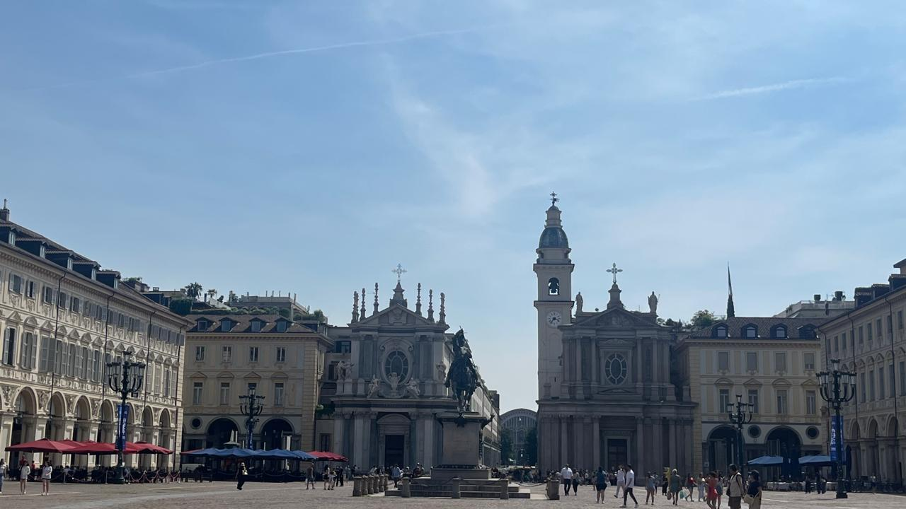
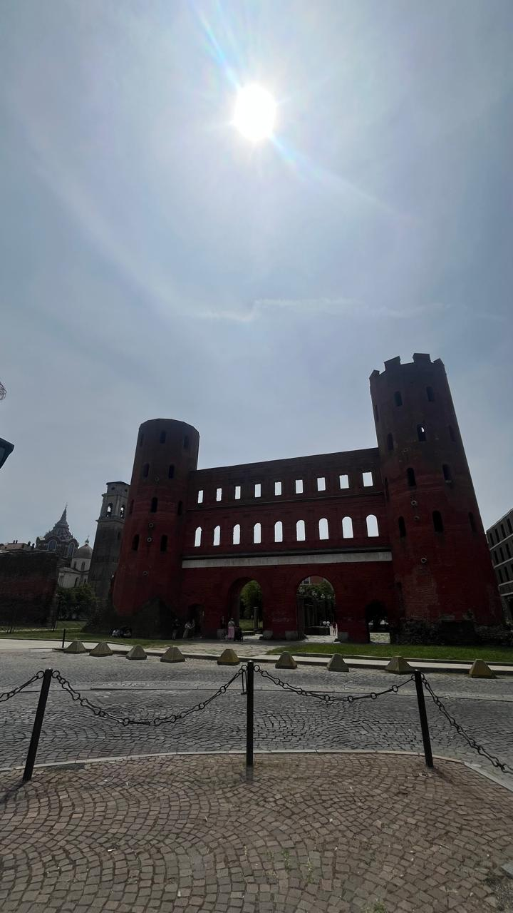
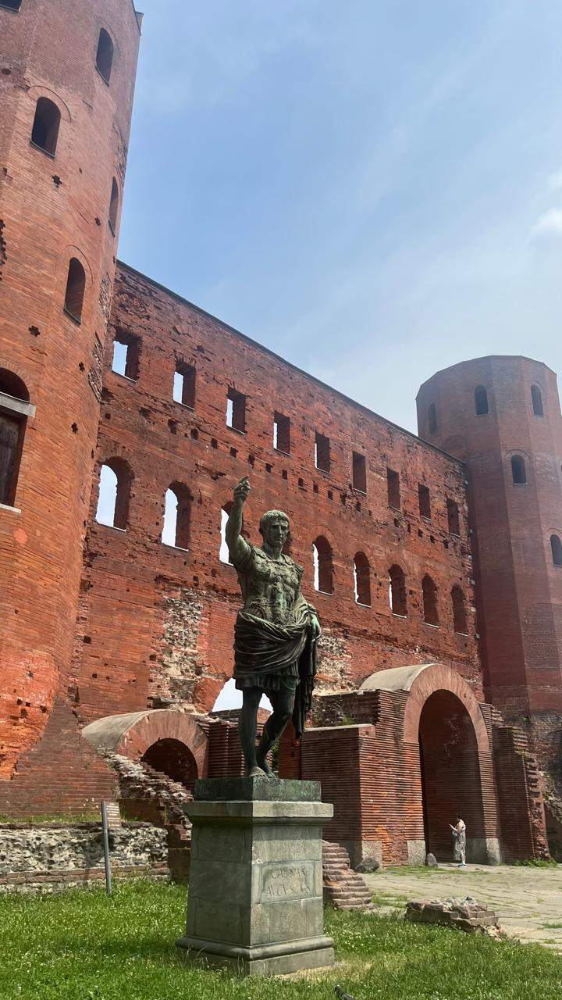
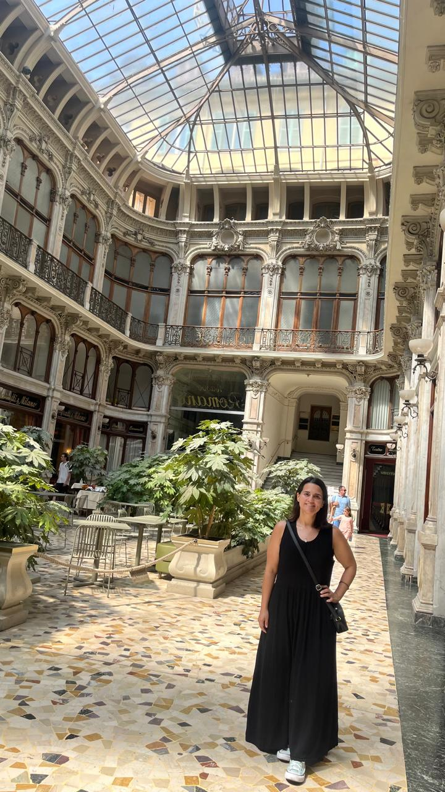
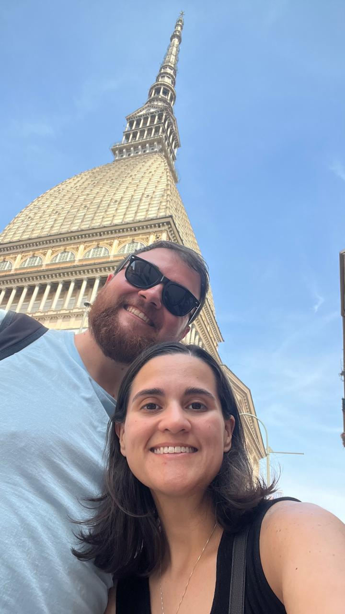
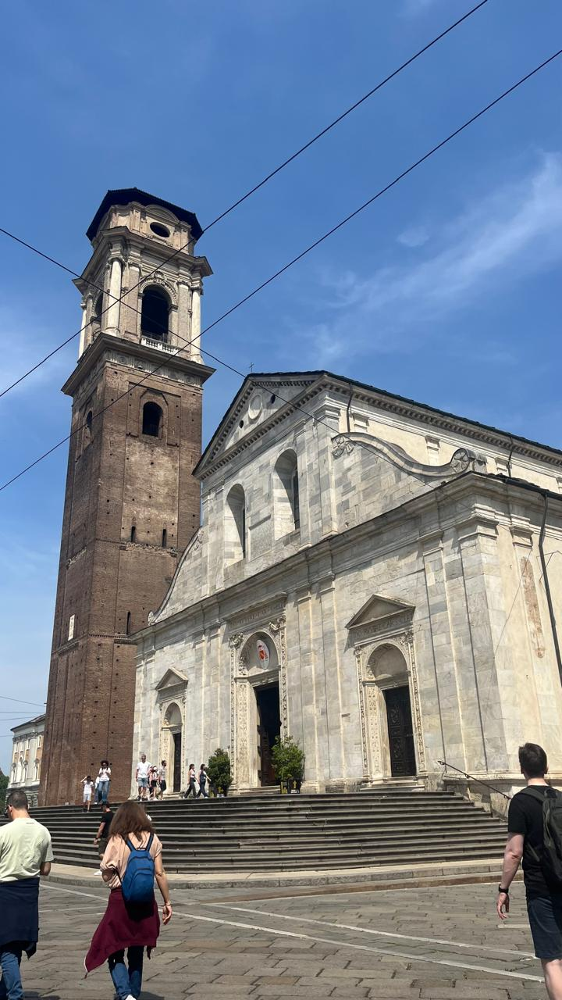

Turim
Turim é uma cidade elegante, com avenidas largas, cafés históricos e uma herança real. É também um polo cultural e gastronômico, famosa por seu chocolate e por abrigar o Santo Sudário.






Milão → Turim
Saindo de Gorla, pegue a linha vermelha (M1) até Loreto. Lá, faça a baldeação para a linha verde (M2) e siga até a estação Centrale.
Na Estação Central de Milão, compre seu bilhete de trem direto para Turim Porta Nuova.
A viagem dura cerca de 1 hora e custa em torno de 15 a 25 euros por trecho.
Pontos Turísticos Imperdíveis
- Mole Antonelliana: Ícone da cidade e sede do Museu do Cinema, com sua torre imponente que domina o horizonte.
- Duomo di Turim: Guarda o Santo Sudário, um dos objetos religiosos mais famosos do mundo, atraindo peregrinos e curiosos.
- Museu Egípcio: O segundo maior do mundo, com coleções impressionantes que revelam a grandiosidade da civilização egípcia.
Gastronomia em Turim
- Primo piatto: Agnolotti, massa recheada típica da região, servida com molho rico e saboroso.
- Secondo piatto: Bollito misto, carnes cozidas acompanhadas de diferentes molhos, um prato tradicional e robusto.
- Sobremesa 🍫: Gianduja, chocolate com avelã que nasceu em Turim e conquistou o mundo.
Dica dos Ussinhos 🐻💡
Melhor época: inverno, para aproveitar os cafés históricos e os museus. Boa escolha para quem busca cultura e espiritualidade além de Milão.